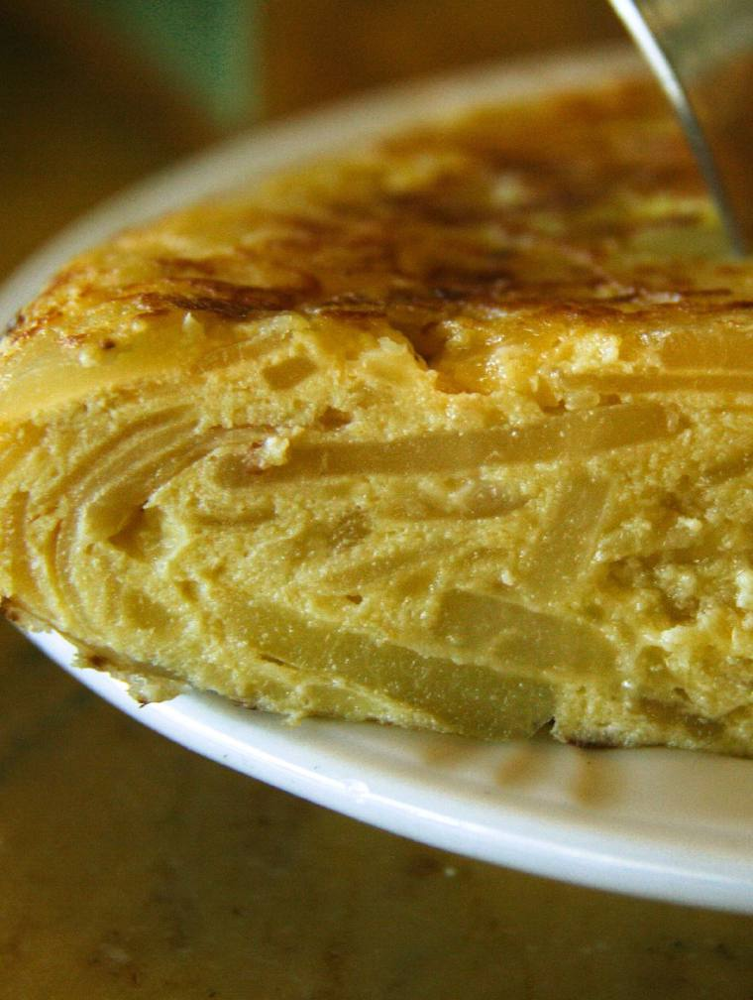

Entrées espagnoles et tapas

Entrées espagnoles et tapas
Tortilla de patatas
Omelette espagnole
Préparation : 20 min
Cuisson : 35 min
Ingrédients (pour 4 personnes)
- 4 pommes de terre moyennes
- 5 œufs
- 1 oignon moyen
- 25 cl d’huile d’olive
- sel
Quantités adaptées. Les temps de cuisson ne sont pas recalculés.
- Couper les pommes de terre en fines rondelles et émincer l’oignon.
- Les confire doucement dans l’huile, en les brisant à l’écumoire, jusqu’à ce qu’elles soient tendres. Égoutter.
- Battre les œufs salés, y mêler pommes de terre et oignon.
- Cuire couvert dans un peu d’huile, 5 à 10 minutes à feu doux.
- Retourner à l’aide d’un couvercle et dorer l’autre face. Servir chaud ou froid.
D’après Spain.info, office espagnol du tourisme. Traduit et reformulé.